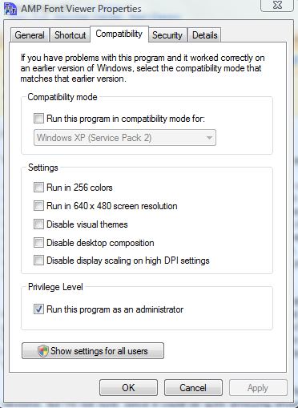

AMP Font Viewer 3.86
© 1997-2008 Alberto Martinez Perez
E-mail: amp@ampsoft.net
Sitio web: http://www.ampsoft.net
Contents
- Descripción
- Licencia de uso
- Instalación
- Consejos de uso
- Nota para usuarios de Windows Vista
- Problemas conocidos y limitaciones
- Notas sobre las fuentes TrueType, OpenType y Type 1
- Créditos
1. Descripción
Este programa es un sencillo pero potente gestor de fuentes, que permite obtener obtener una
vista rápida tanto de fuentes instaladas como no instaladas. Puede instalar y desinstalar
fuentes, y organizarlas en categorías. Algunas de sus características son:
- Suporta fuentes TrueType y OpenType (Windows 2000/XP requerido para fuentes PostScript OpenType)
- Suporta fuentes Type1 (Windows 2000/XP requerido)
- Instalación de fuentes desde una carpeta (una por una o desde una lista).
- Instalación temporal de fuentes of fonts temporally (hasta que se cierra el programa).
- Borrado de fuentes instaladas.
- Lista de todas las fuentes instalas con varias opciones de visualización.
- Lista las fuentes de una carpeta con varias opciones de visualización.
- Varias opciones para organizar y administrar las fuentes en categorías.
- Puede imprimir una lista de todas o algunas de las fuentes instaladas con un ejemplo de cada fuente.
- Área de trabajo para comprobar el aspecto de cada fuente (instalada o de una carpeta).
- Versión dual Inglés/Español.
Ver Cambios.txt para la revisión de cambios.
Si tienes alguna sugerencia, encuentras bugs, etc., mándame un e-mail.
2. Licencia de uso
Este programa es gratuito (freeware), pero sólo para USO PRIVADO Y SIN ANIMO DE LUCRO. Para uso
comercial, corporativo, educacional o gubernamental, o inclusión en distribuciones con obtención de
beneficios (CD's, ...) se debe contactar con el autor para pedir autorización.
Este programa es distribuído "tal cual", SIN NINGUNA GARANTÍA DE NINGUN TIPO. El autor rechaza
toda responsabilidad por cualquier posible daño surgido a raiz del uso de este programa.
Este programa se puede redistribuir gratuitamente, pero sólo usando el paquete
original. Si no se tiene el paquete original, se puede descargar una copia desde el
sitio web de AMPSoft en http://www.ampsoft.net.
3. Instalación
El programa es distribuido en dos formatos:
Instalador: Ejecuta el archivo .EXE y sige las instrucciones de las pantallas de
instalación.
Archivo ZIP: Basta con extraer los archivos del programa a la carpeta en que se
quiera instalarlo, y crear un acceso directo al archivo ejecutable.
4. Notas de uso
- Cuando se instala una fuente temporalmente, la fuente está disponible para
todos los demas programas hasta que se cierra Font Viewer, o hasta que se usa la opción
Desinstalar fuentes instaladas temporalmente. Esto es útil para
no tener que instalar cada fuente (tener instaladas muchas fuentes puede ralentizar Windows,
mirar también sobre el límite de fuentes de Windows en la siguiente sección).
- Si se organizan las fuentes no instaladas en carpetas por categorías, se puede
encontrar fácilmente la fuente que se necesite usando la opción de Ver carpeta, e instalarla
temporalmente. Para organizar las fuentes no instalas mas fácilmente, se puede usar la
opción Mover archivo de fuente.
- Si se pone un cero en el número de columnas de la ventana Fuentes
instaladas por categorias, la barra de desplazamiento se hace vertical en vez de
horizontal, mostrando una sola columna.
- Cuando se imprime la lista de fuentes, el programa usa el número de columnas y el
tamaño de la lista de fuentes. Hay que tener en cuenta que la porción de texto
que se ve en la pantalla puede ser diferente de la que se imprime.
- No se debería usar la opción para ver listas de fuentes no instaladas en carpetas con más
de 250-300 fuentes. Font Viewer instala esas fuentes temporalmente, y esto puede ser un proceso
lento. Además, se puede exceder el límite de fuentes de Windows (ver la siguiente sección para
esto).
5. Nota para usuarios de Windows Vista
Windows Vista viene por defecto con unas opciones de seguridad mas estrictas, bloqueando algunas acciones como
instalar fuentes permanentemente. En caso de encontrar problemas instalando fuentes, hay que localizar el acceso directo
de AMP Font Viewer en el Menú Inicio, pulsar en él con el segundo botón del ratón y seleccionar Propiedades en el
menú contextual. Desde ahí ir a la pestaña de Compatibilidad y marcar "Ejecutar este programa como administrador"
(es posible que se solicite una clave de administrador). Una vez hecho esto, se pueden instalar fuentes como en anteriores
versiones de Windows.

6. Problemas conocidos y limitaciones
- En Windows NT/2000/XP, se debe iniciar sesion con una cuenta de administrador para
permitir que Font Viewer se ejecute correctamente. Si se entra como usuario normal, se
podrán ver las fuentes instaladas, pero algunas opciones no funcionarán, como instalar
nuevas fuentes.
- En Windows 9x/Me, el número de fuentes que se pueden tener
instaladas está limitado. Este número depende de la longitud de los nombres de la fuente
y del archivo de fuente, debido a una limitacion del Registro de Windows. Usualmente el numero
de fuentes que se puede instalar esta entre 1000 y 1200 (si se tienen instalados cuatro
subtipos de una fuente, cuentan como cuatro fuentes diferentes).
Debido a esto, cuando se use la opción Ver carpeta, si la suma de fuentes instaladas y
no instaladas supera el límite de fuentes no se podrán ver las últimas fuentes
correctamente, ya que el programa necesita instalar esas fuentes temporalmente.
- Windows 9x/Me no soportan fuentes PostScript OpenType (*.otf) ni Type 1 (*.pfm & *.pfb).
7. Notas sobre las fuentes TrueType, OpenType y Type 1
- Subfamilias de fuente. Una fuente puede tener diferentes archivos para diferentes subfamilias
o estilos (negrita, cursiva...). Esto se hace para obtener una mejor calidad para la fuente. Si la
fuente sólo tiene un archivo, Windows o los programas simulan los estilos. Debido a esto, se
pueden instalar cuatro archivos y obtener sólo una fuente nueva, pero con cuatro subfamilias
(usualmente Normal, Negrita, Cursiva y Negrita Cursiva).
- Diferente nombre para la misma subfamilia. A veces, hay una subfamilia que es idéntica
a otra subfamilia con diferente nombre. Normalmente esto es debido a que los autores de
la fuente han sacado diferentes versiones de la fuente con nombres de subfamilia diferentes
(por ej. Normal, Regular y Plain suelen ser equivalentes).
- Diferente nombre de archivo para la misma fuente. Una fuente no tiene un nombre de
archivo único. En otras palabras, se puede encontrar la misma fuente con nombres de
archivo diferentes.
- Las fuentes Type 1 estan compuestas de dos archivos: el archivo Printer Font Metrics (PFM)
y el archivo Printer Font Binary (PFB). Se requieren ambos archivos para instalar estas fuentes en
Windows.
8. Creditos
© 1997-2008 Alberto Martinez Perez
E-mail: amp@ampsoft.net
Gracias a toda la gente que me ha enviado sugerencias e informes de errores.